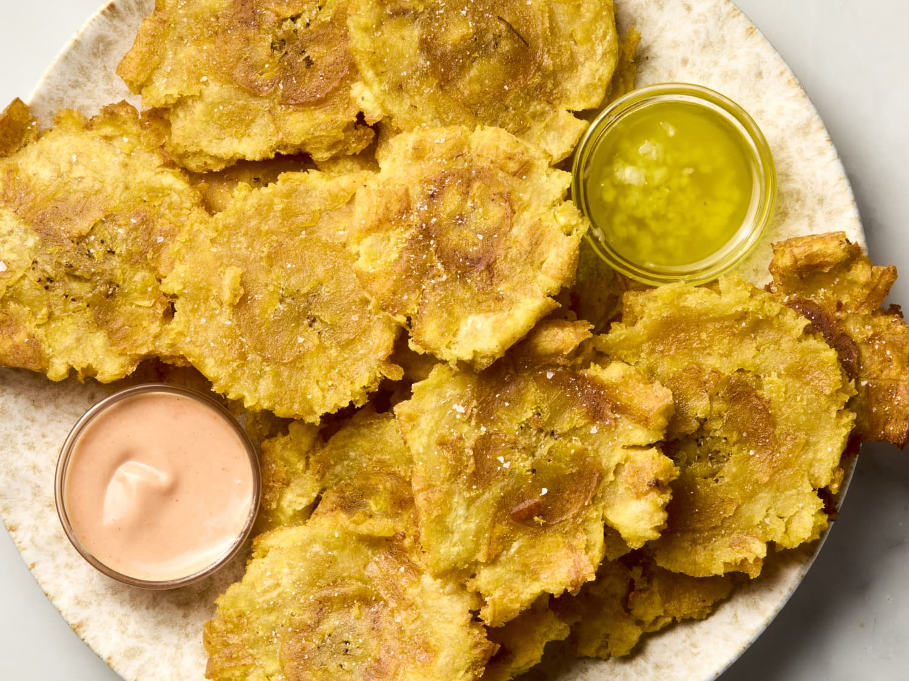

Tostones

Shown: Tostones
Tostones are a popular dish in Latin American and Caribbean cuisine, consisting of twice-fried green plantain slices. They are known for their savory, crispy texture and are often served as a side dish or appetizer.
Ingredients
- 1 Green Plantain
- 5 Tablespoons of Frying Oil
- 3 Cups of Cold Water
- Salt to Taste
Step by Step
- Peel plantain and cut into 1-inch slices. Fill a bowl with 3 cups of cold water.
- Heat oil in a large deep skillet over medium-high heat; add plantain slices in an even layer and fry on both sides until golden brown, about 3 1/2 minutes per side. Set skillet aside.
- Transfer plantain slices to a chopping board; flatten each one by placing a small plate on top and pressing down.
- Dip plantain slices in cold water.
- Reheat oil in the skillet over medium heat; cook plantain slices for 1 minute on each side.
- Season to taste with salt and serve immediately.
Home